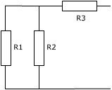
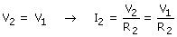
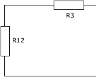

Se conocen I1, V1

Propiedad del paralelo

Se sustituye el paralelo R1- R2 por su equivalente (No es nece-sario calcularlo)

Propiedades del paralelo:
V12 = V1
I12 = I1 + I2
Conociendo I12, V12 ya se pueden calcular intensidad y tensión en la resistencia R3